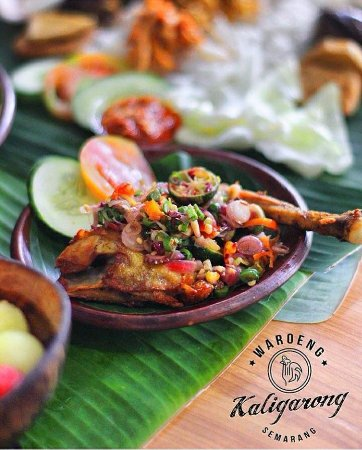

Ayam Sambal Matah

Image from Tripadvisor Waroeng Kaligarong
Description
Ayam Sambal Matah is a vibrant Balinese dish that perfectly captures the essence of Indonesian "raw" condiments.
At its heart is succulent, often crispy fried or grilled chicken, served alongside a fragrant heap of Sambal Matah.
Unlike traditional cooked salsas, this sambal is a refreshing medley of finely sliced shallots, lemongrass, bird's eye chilies, and kaffir lime leaves, all tossed in hot coconut oil and a hint of shrimp paste.
The result is a brilliant contrast between the savory, warm protein and the sharp, citrusy crunch of the raw aromatics.
The experience of eating this dish is a masterclass in sensory balance.
Every bite delivers a punchy kick of heat from the chilies, immediately tempered by the floral brightness of the lemongrass and the zesty lift of freshly squeezed lime juice.
It is famously light yet incredibly bold, making it a favorite for those who crave complex flavors without the heaviness of a thick curry or sauce.
Usually served over a bed of steaming jasmine rice, it is an aromatic staple that brings the tropical heat of Bali straight to the plate.
Ingredients
- The Chicken (Ayam)
- 500g of chicken thigh or breast
- 2 cloves of garlic (minced) and a pinch of turmeric powder
- Salt and white pepper
- Cooking Oil
- The Sambal Matah
- 10-15 bulbs of shallots, peeled and finely sliced
- 2-3 stalk of lemongrass (use only the white,tender inner part), sliced very thin.
- 5-10 Chillies (adjust based on your tolerance),sliced
- 4-5 Kaffir lime leaves, spine removed and chiffonade(finely shredded)
- 1 tsp of shrimp paste, toasted or fried until fragrant
- 1-2 tbsp of fresh jeruk limau(lime)
- 3-4 tbsp of Coconut oil
- A pinch of salt and sugar to balance the acidity
Steps
- Prepare and Cook the Chicken
- Marinate:Rub your chicken pieces with minced garlic, turmeric, salt, and pepper. Let it sit for at least 15-20 minutes to absorb the flavors.
- Cook:Heat oil in a pan and fry (or grill) the chicken until the skin is golden brown and crispy, and the meat is cooked through.
- Rest and Slice:Let the chicken rest for a few minutes so the juices stay inside, then slice it into bite-sized strips or cubes.
- Prepare the Aromatics
- The Fine Chop:While the chicken is cooking, finely slice your shallots, lemongrass (inner white part only), chilies, and kaffir lime leaves. The thinner you slice them, the better the flavors will meld.
- The Base Mix:Place all the sliced ingredients into a heat-proof bowl. Add the toasted shrimp paste (crumbled), salt, and a pinch of sugar. Toss them together lightly with a spoon or gloved hands.
- The "Flash" Infusion
- Heat the Oil:In a small pan, heat the coconut oil until it just starts to smoke.
- The Sizzle:Carefully pour the hot oil over your bowl of aromatics. You should hear a satisfying sizzle! This flash-sears the shallots and chilies, removing the "raw" bite while keeping the crunch.
- Citrus Finish:Squeeze in your fresh lime juice and toss everything one last time.
- Plating
- Combine:You can either toss the chicken directly into the bowl with the sambal or scoop a generous portion of the sambal over the top of the chicken.
- Serve:Serve immediately with a side of warm jasmine rice and perhaps some cucumber slices to cool the palate.